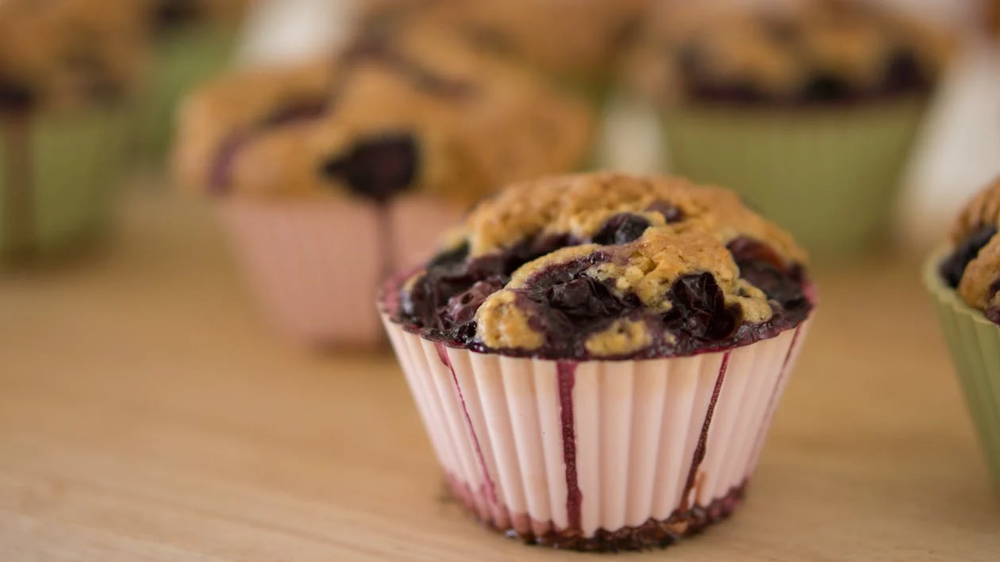

Blueberry Muffins
Prep Time: 10 minutes
Cook Time: 20 minutes
Ingredients
- 1 1/2 cups flour
- 1/2 cup sugar
- 2 tsp baking powder
- 1/2 cup milk
- 1/4 cup vegetable oil
- 1 large egg
- 1 cup fresh or frozen blueberries
Instructions
- Preheat your oven to 375°F (190°C).
- In a bowl, mix flour, sugar, and baking powder.
- In another bowl, whisk together milk, oil, and egg.
- Gradually add the wet ingredients to the dry ingredients and stir until just combined.
- Gently fold in blueberries.
- Spoon the batter into greased muffin cups, filling each about 2/3 full.
- Bake for 18-20 minutes or until a toothpick comes out clean.
- Let cool for a few minutes before removing from the muffin tin.